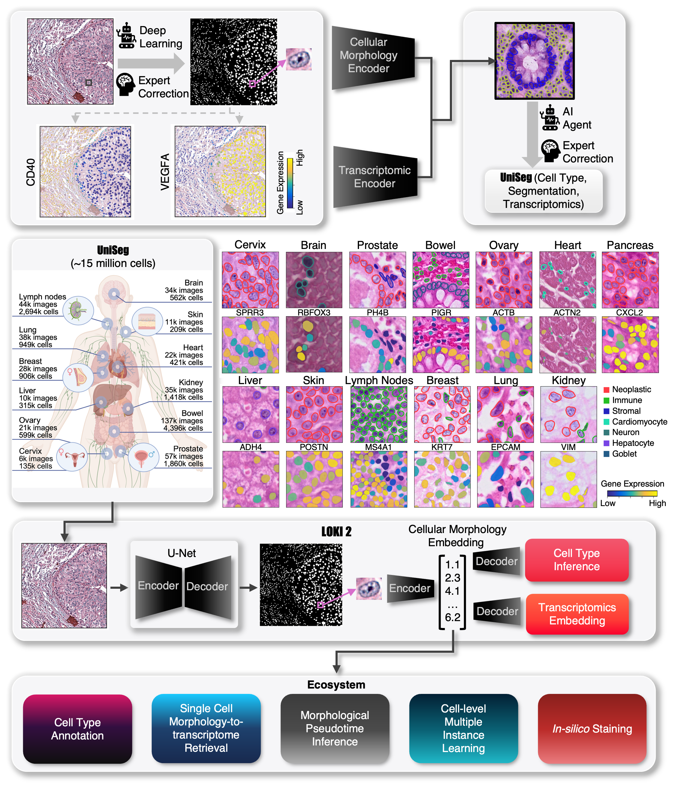

Loki2 documentation
Loki2 is a single-cell pathology foundation model that uses an encoder–decoder architecture to translate nuclear morphology into molecular phenotype. Loki2 is trained on UniSeg, a pan-tissue resource of 15 million cells with paired segmentation and transcriptomic measurements from multiple spatial technologies. This training strategy enables three capabilities from H&E images alone: universal cell type inference, in silico spatial transcriptomics by retrieving transcriptionally matched cells from reference atlases, and continuous morphological pseudotime inference of cell state transitions. By aggregating single-cell features, Loki2 also supports whole-slide clinical tasks. These results show that routine histology contains far richer molecular and cellular information than previously recognized, and that Loki2 provides a general framework for accessing this information across tissues, disease contexts, and scales.
Please find our github on GitHub.
{kind=link}

API
Tutorials
- Installation
- Loki2 Cell Type Inference
- Loki2 Morphology-to-Transcriptome Retrieval
- Loki2 Morphological Pseudotime Inference - Colon Cancer Samples
- Loki2 Morphological Pseudotime Inference - Prostate Cancer Sample
- Loki2 in silico immunostaining
- Data Requirements
- Examples of PanCK Marker
- One-time prep: generate per-patch JSON and embeddings
- Inspect available patches
- Define train/val/test patch splits
- Build datasets
- Preprocess features and targets
- Train LightGBM with patch-level validation
- Optional: test set evaluation
- Save model and predictions
- Visualize predictions
- Patch-level GT vs Pred visualization
- Examples of CD45RO Marker
- One-time prep: generate per-patch JSON and embeddings
- Inspect available patches
- Define train/val/test patch splits
- Build datasets
- Preprocess features and targets
- Train LightGBM with patch-level validation
- Optional: test set evaluation
- Save model and predictions
- Visualize predictions
- Patch-level GT vs Pred visualization
- Loki2 Cell-level Multiple Instance Learning